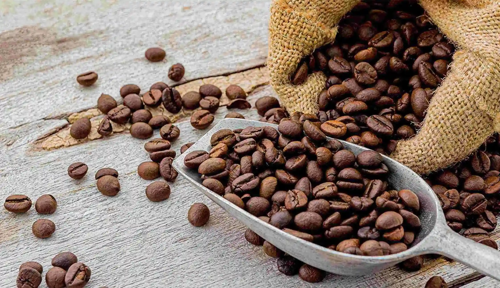

Cerita Usaha
Tentang Kopi Nusa
Kopi Nusa adalah UMKM lokal yang memadukan kekayaan rasa kopi khas nusantara dengan sentuhan modern.

Nilai yang Kami Bawa
- Bahan lokal dari petani sekitar.
- Proses sederhana dan transparan.
- Pelayanan ramah untuk pelanggan harian.